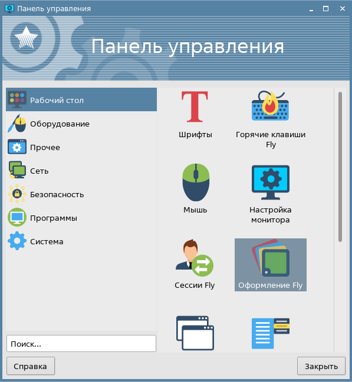
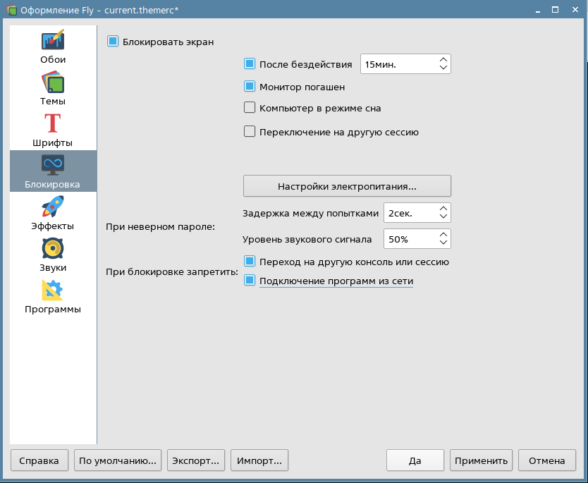

Лабораторная работа №12. Тема: "Red Book: настройка безопасной конфигурации для Astra Linux Special Edition 1.7"
<---- Обратите внимание на консольный сервер в левой части экрана, вам следует использовать этот сервер для выполнения лабораторной работы
Цель работы
Цель работы
- Ознакомиться с основными рекомендациями по безопасной настройке компьютера под управлением ОС Astra Linux;
- Получить навык настройки локальных политик безопасности;
- Получить навык настройки служб системы, для обеспечения защищенной работы.
Оборудование, ПО:
Виртуальная машина или компьютер под управлением ОС AstraLinux 1.7 в режиме защищенности "Воронеж" или выше.
Чем займемся?
В рамках последней лабораторной работы нам предстоит познакомиться с "Книгой рекомендаций" от разработчиков Astra Linux - Red Book.
Настройка безопасной конфигурации компьютера для работы с ОС Astra Linux
Начнем с настройки компьютера, на которую планируется установить операционную систему:
- Если планируется использовать ОС в рекомендованном режиме очистки освобождающихся дисковых ресурсов, то исключить использование дисков SSD;
- Установить "взломостойки" пароль на BIOS компьютера. "Взломостойкий", в понимании Astra Linux, это:
- Содержащий не менее 8 символов;
- Не содержащий в себе никаких осмысленных слов (ни в каких раскладках);
- Содержащий в себе буквы в различных регистрах, цифры и спецсимволы.
- При использовании процессоров Intel, рекомендуется отключить технологию Software Guard eXtensions (SGX). Ссылка на уязвимость
- Обеспечить физическую защиту компьютера (различные пломбы, защитные крышки).
- Исключить использование беспроводных устройств.
- Отключить Wi-Fi и Bluetooth. Если Wi-Fi отключить нельзя, то настроить алгоритмы шифрования трафика (VPN или проксирование).
- При наличии опций для процессоров Intel Execute Disable Bit (XD-Bit) и для процессоров AMD No Execute Bit (NX-Bit) включить их.
Компьютер настроили, теперь можем перейти к настройки ОС.
- Установка ОС, в целом, обычная, за некоторым исключением.
- Рекомендуется использовать диски, на которых планируется хранить ОС, в режиме защитного преобразования дисков. Установить ОС в этом режиме можно вот так Ссылка на документацию Astra Linux.
- В разделе установщика «Дополнительные настройки ОС» включить следующие функции подсистемы безопасности:
- Запрет вывода меню загрузчика — при включении данной функции будет запрещен вывод меню загрузчика GRUB 2.
- Запрет трассировки ptrace — при включении данной функции будет исключена возможность трассировки и отладки выполнения программного кода.
- Запрос пароля для команды sudo — при включении данной функции будет необходим ввод пароля при использовании механизма sudo.
- Запрет установки бита исполнения — при включении данной функции будет активирован режим запрета установки бита исполнения.
- Запрет исполнения скриптов пользователя — при включении данной функции блокируется несанкционированное использование интерпретатора для выполнения кода напрямую из командной строки или из неименованного канала (pipe).
- Запрет исполнения макросов пользователя — при включении данной функции будет блокировано исполнение макросов в стандартных приложениях.
- Запрет консоли — при включении данной функции будет блокирован консольный вход в систему для пользователя и запуск консоли из графического интерфейса сессии пользователя.
- Системные ограничения ulimits — при включении данной функции будут активированы системные ограничения, установленные в файле /etc/security/limits.conf.
Настройка парольной политики
Данный пункт, хоть и присутствует в рекомендациях к работе, но актуален только для локальных учетных записей. Если используется доменная инфраструктура, то все настройки выполняются на доменном сервере.
Внести изменения в настройки политики паролей можно следующим образом:
- в файле /etc/pam.d/common-password в строке password requisite pam cracklib.so установить значение minlen=8 и добавить параметры dcredit=-1, ucredit=-1 и lcredit=-1;
- в файле /etc/login.defs для переменной PASS_MAX_DAYS установить значение 90, для переменной LOGIN_RETRIES установить значение 6 и для переменной LOGIN_TIMEOUT установить значение 1800.
- Запретить повторное использование последних четырех паролей, откорректировав файл /etc/pam.d/common-password. Для этого в указанном файле в строке «...pam_unix.so» добавить параметр remember=4;
- Настроить использование механизма sudo таким образом, чтобы пароль не запоминался для выполнения последующих команд и запрашивался для каждой команды. Для этого:
- в терминале выполнить команду
sudo visudo - в открывшемся файле /etc/sudoers добавить строку
Defaults timestamp_timeout=0
- в терминале выполнить команду
Настройка экрана блокировки
Экран блокировки также рекомендуется перенастроить. Сделать это можно через графические утилиты - Пуск — Панель управления — Рабочий стол — Оформление Fly
на боковой панели навигации выбрать пункт Блокировка и выполнить действия (см. рис. ниже):
Блокировка системных команд для пользователей
Включить блокировку запуска пользователями программ df, chattr, arp, ip.
Для включения блокировки выполнить команду - sudo astra-commands-lock enable
Для того, чтобы проверить состояние блокировки системных команд, необходимо выполнит команду - sudo astra-commands-lock status
Ой, я столько всего навключал(а) в этих политиках безопасности, а как теперь понять что работает быстро?
Краткую сводку состояний функций безопасности можно просмотреть, используя графическую утилиту fly-admin-smc. Для этого:
- через графический интерфейс запустить утилиту (необходимы права администратора): Пуск — Панель управления — Безопасность — Политика безопасности;
- на боковой панели навигации выбрать пункт Монитор безопасности. Если функция безопасности включена, то в столбце Статус будет отображен символ ✓, а поле будет выделено зелёным цветом.
Через командную строку узнать это можно - sudo astra-security-monitor
Какие еще настройки можно сделать?
- Например, очистку области подкачки можно включить с помощью команды -
sudo astra-swapwiper-control enable - Для очистки оперативной памяти можно включить с помощью команды -
sudo astra-secdel-control enable
В процессе эксплуатации ОС
- При возможности не использовать спящие режимы энергосбережения (т.н. сон, sleep, suspend-to-disk, hibernation, гибридный сон и пр.);
- На компьютерах, введённых в домен, при наличии возможности, ограничить вход локальных пользователей, для это в файл /etc/parsec/parsec.conf внести следующие изменения:
- Закомментировать строку: login_local all
- раскомментировать строку: login_local no
- Также, рекомендуется настроить режим "Киоска" - ограниченный набор приложений. Подробнее об этом можно ознакомиться тут
Послесловие
Также, в качестве документа, который можно использовать для работы и безопасной настройки - рекомендации ФСТЭК
Заключение
В заключении можно сказать, что данный курс по Astra Linux предоставил вам фундаментальные знания по установке, настройке и использованию операционной системы Astra Linux.
Вы получили необходимые навыки для работы с защищенной операционной системой и улучшили свои профессиональные компетенции.
Курс также помог понять важность безопасности в сфере информационных технологий и научил вас применять защищенные методы работы с операционной системой.
Мы надеемся, что курс по Astra Linux оказался для вас полезным и информативным, и теперь вы готовы применять свои знания на практике.
Дополнительная информация:
- Red Book для Astra Linux 1.7 Ссылка
- Ссылка на дополнительную информацию
После завершения работы, для проверки выполнения работ - выполните команду
checker_system11